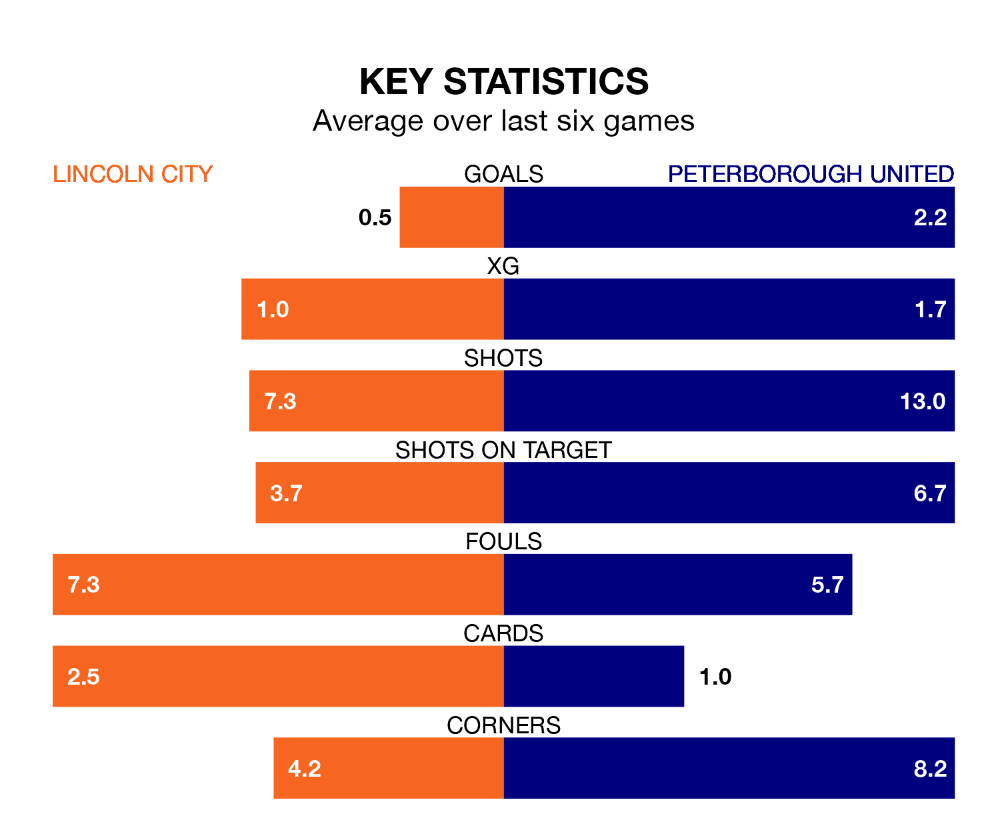

Peterborough United are strong favourites to take all three points despite Lincoln City's home advantage in Saturday's match at the LNER Stadium.
*Betting Company* are offering odds of 1.78 on Peterborough sealing the win, with the visitors sitting second in EFL League One table.
Lincoln, who are 12th in the league and 21 points behind the Posh, are priced at 4.2 to win. A draw is set at 3.7.
With 54 goals in 27 games so far this season, Peterborough are the league's highest scorers with 2.0 goals per game. And they are conceding fewer than average, letting in 29 goals at a rate of 1.1 per game.
Lincoln, meanwhile, are below average scorers, with 1.1 goals per game, compared to a league average of 1.3. They have also conceded 1.1 goals per game.
City are in terrible form in EFL League One, with no wins and two draws from their last six games.
With four wins and two draws over that period, United's form is much better – they have taken 14 points from 18, compared to the Imps' two.
In the last 10 years, Lincoln and Peterborough have played each other on eight occasions. Lincoln won two of them, Peterborough four, and they drew twice.
On average, the Imps scored 1.2 goals and the Posh 2.2 in those matches.
Their last meeting was on October 7, when Peterborough won 2-0 at home.
The Posh's Harrison Burrows is the league's most creative player, racking up eight assists in 27 appearances so far this season.
For the hosts, Lasse Sørensen has set up the most goals, having laid on four assists in 26 games.
Lincoln's last match was on January 20, a 0-0 draw against Derby County.
Peterborough beat Shrewsbury Town 2-1 last time out, also on January 20, with Joel Randall and Josh Knight on the scoresheet.
Updated: 09:18 (UTC), 23/01/24